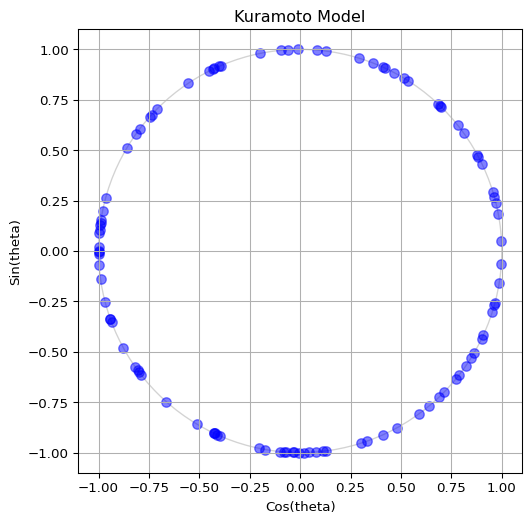
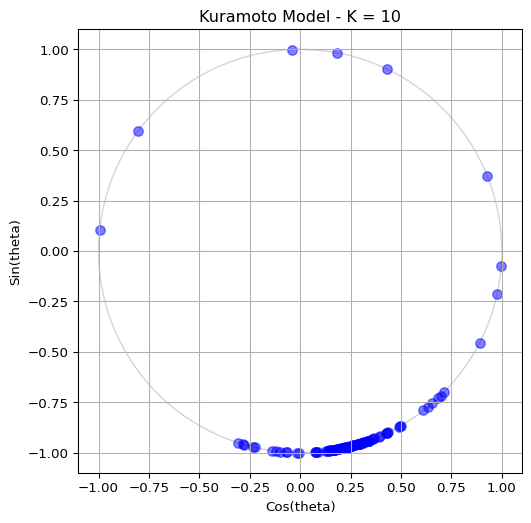
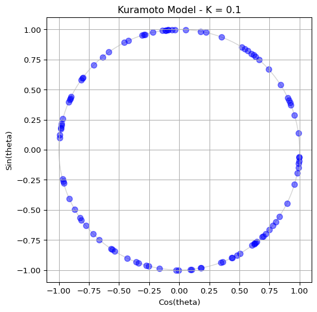
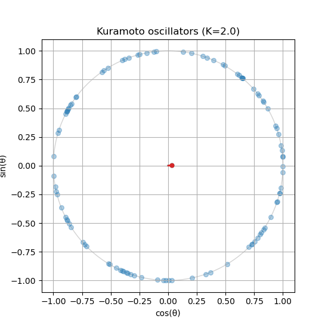

Kuramoto Model
Coupled Oscillators
Initialize Oscillators
The phases \(\theta_i\) are sampled uniformly on \([0, 2\pi]\) and the natural frequencies \(\omega_i\) from a normal distribution with standard deviation \(\sigma\).
Write a function to initialize the oscillators:
def initialize_oscillators(num_oscillators: int, sigma: float = 1.0):
# Assign a random initial phase to each oscillator
theta = # draw from uniform distribution
# Assign a random natural frequency to each oscillator
omega = # draw from normal distribution
return theta, omegaThe outputs theta and omega are 1D arrays of length num_oscillators. If you don’t know how to sample from these distributions, see the hint below.
How to sample from distributions (click to expand)
Remember NumPy has built-in functions for sampling from distributions: - Uniform distribution: np.random.uniform(low=0.0, high=2*np.pi, size=num_oscillators) - Normal distribution: np.random.normal(loc=0.0, scale=sigma, size=num_oscillators)
If you need more help, you can expand the code snippet below for a complete implementation.
Complete initialization function (click to expand)
def initialize_oscillators(num_oscillators: int, sigma: float = 1.0):
# Assign a random initial phase to each oscillator
theta = np.random.uniform(low=0.0, high=2 * np.pi, size=num_oscillators)
# Assign a random natural frequency to each oscillator
omega = np.random.normal(loc=0.0, scale=sigma, size=num_oscillators)
return theta, omega(Remember to import numpy first!)
Plot the Oscillators
To visualize the oscillators, we can plot their phases on the unit circle. The x-coordinate is \(\cos(\theta_i)\) and the y-coordinate is \(\sin(\theta_i)\). This way, each oscillator corresponds to a point on the circle. Build a code to visualize the oscillators as blue dots on the unit circle. Your output should be similar to Figure 1, but feel free to show it in your own style!
If you don’t know how to achieve the plot above, feel free to expand some of the hints below.
How to compute the positions of the oscillators (click to expand)
To compute the x and y coordinates for the plot, you can use NumPy’s cos and sin functions applied to the theta array:
x = np.cos(theta)
y = np.sin(theta)(Remember to import numpy first!)
How to create the plot (click to expand)
To create the plot, you can use Matplotlib’s subplots function to set up the figure and axes, and then use scatter to plot the points. Here’s a complete example:
# First, we prepare the figure and axes
fig, ax = plt.subplots(figsize=(6, 6))
# fig is the Figure, a "canvas" where everything is drawn
# ax is the Axes, a "subplot" where we can plot data
# A single figure can have multiple axes (e.g. for subplots)
ax.set_title("Kuramoto Model") # Title of the plot
ax.set_xlabel("Cos(theta)") # Name of x-axis
ax.set_ylabel("Sin(theta)") # Name of y-axis
ax.set_xlim(-1.1, 1.1) # Limits for x-axis
ax.set_ylim(-1.1, 1.1) # Limits for y-axis
ax.set_aspect("equal") # Make the circle look circular
ax.grid(True) # Show grid lines
# Draw unit circle (optional, but it helps to visualize the boundary)
circle = plt.Circle((0, 0), 1, color="lightgray", fill=False)
ax.add_artist(circle)
# Now we are ready to plot the oscillators as blue dots
ax.scatter(x, y, s=50, color="blue", alpha=0.5)
# s is the size of the dots
# alpha is the transparency (0 is fully transparent, 1 is fully opaque)
# we want the oscillators to be somewhat transparent so we can see overlaps
# Finally, we show the plot and close it to free up memory
plt.show()
plt.close()Define the ODE
Choose between the original pairwise form of the Kuramoto model or the mean field approximation. You can see both forms in the theory page Kuramoto Model. The mean field approximation is often more efficient for large populations, as it avoids computing pairwise interactions.
Follow the template below to define the ODE function for the Kuramoto model. Call it kuramoto_ode(). The function should compute the derivatives of the phases \(\dot\theta_i\) based on the current phases \(\theta_i\), natural frequencies \(\omega_i\), and coupling strength \(K\).
def ode(t, state, *params):
# state represents the current values of the variables (e.g., x, y)
# params are any additional parameters needed to compute the derivatives
# each of them is separated by commas
return dstate_dt # this should be a sequence of the same length as `state`Remember: solve_ivp() requires the time argument even if it is not used.
By the way, remember to keep the phases \(\theta_i\) within the range \([0, 2\pi]\) to avoid numerical issues. You can use np.mod(theta, 2 * np.pi) to achieve this.
See the full ODE function (click to expand)
The function below is for the mean-field approximation of the Kuramoto model, which is more efficient than computing pairwise interactions. It computes the order parameter at each time step and uses it to calculate the derivatives.
def kuramoto_ode(t, theta, omega, coupling_strength=1.0):
# Make sure theta stays within [0, 2*pi] to avoid numerical issues
theta = np.mod(theta, 2 * np.pi)
order_param = np.mean(np.exp(1j * theta))
r = np.abs(order_param)
phi = np.angle(order_param)
dtheta_dt = omega + coupling_strength * r * np.sin(phi - theta)
return dtheta_dtTo validate that your function works, try running it with the following parameters:
- Coupling strength \(K=10.0\) (this is a strong coupling regime where synchronization should occur)
- Number of oscillators \(N=100\)
- Standard deviation of natural frequencies \(\sigma=1.0\)
Run the simulation for \(t \in [0, 10]\) and visualize the last state on the unit circle. You should see some degree of synchronization, with the oscillators clustering together. See Figure 2 for a sample output.

How to run the simulation (click to expand)
You can use scipy.integrate.solve_ivp() to run the simulation. Here’s a simple example of how to do this:
from scipy.integrate import solve_ivp
# Parameters
coupling_strength = 10.0
num_oscillators = 100
sigma = 1.0
t_span = (0, 10)
# Initialize oscillators
theta, omega = initialize_oscillators(num_oscillators, sigma=sigma)
# Run the simulation
sol = solve_ivp(
kuramoto_ode,
t_span,
theta,
args=(omega, coupling_strength)
)
# The solution `sol.y` contains the phases of the oscillators at each time step.
# sol.y is a 2D array of shape (num_oscillators, num_time_points)
# You can visualize the last state using the same plotting code as before.
theta_end = sol.y[:, -1] # Get the final state of the phases
x = np.cos(theta_end)
y = np.sin(theta_end)
# Plotting code as before to visualize the final stateThen, try reducing the coupling strength to \(K=0.1\) and observe how the oscillators become more scattered, indicating a more incoherent state. See Figure 3 for a sample output.

Animate the Phases
Seeing the final state of the system is nice and that, but you know what is even better? Seeing it in action! You can use matplotlib.animation to create an animation of the oscillators moving around the unit circle as they evolve according to the Kuramoto ODE. This will allow you to visualize the process of synchronization in real time.
To create an animation, make sure you are working on a Python script in your local computer (e.g., kuramoto.py) and run it with python kuramoto.py. It is possible to do animations on Jupyter notebooks, but it is more complicated and may not work in all environments.
Ready? Firt, your script should initialize the oscillators and all parameters that you want to control (e.g., coupling strength, number of oscillators, etc.).
# Remember to include / import the following functions
# that you have created earlier:
# initialize_oscillators()
# kuramoto_ode()
coupling_strength = 1.0 # K
num_oscillators = 100 # Number of oscillators
omega = 0.5 # Standard deviation of the natural frequencies
sigma = 1.0 # Scale of the initial phases
dt = 0.1 # Time step for the integration time
# Initialize oscillators (phase and natural frequency)
theta, omega = initialize_oscillators(
num_oscillators,
sigma=sigma
)
t_span = (0, dt)
# For the animation, we use a small time span
# But you can go higher for the static imagine
# t_span = (0, 100)Second, we need to create a figure and axes. Every element inside this plot should be named, so that we can update it in real time. Follow this template:
# Initialize the figure and axes
fig, ax_phase = plt.subplots(figsize=(6, 6))
# Define the labels and size of this plot
ax_phase.set_title("Kuramoto Model")
ax_phase.set_xlabel("Cos(theta)")
ax_phase.set_ylabel("Sin(theta)")
ax_phase.set_xlim(-1.1, 1.1)
ax_phase.set_ylim(-1.1, 1.1)
ax_phase.set_aspect("equal")
ax_phase.grid(True)
# Draw unit circle (optional, but it helps to visualize the boundary)
circle = plt.Circle((0, 0), 1, color="lightgray", fill=False)
ax_phase.add_artist(circle)
# Initialize scatter plot for oscillators
scatter = ax_phase.scatter([], [], s=50, color="blue", alpha=0.25)
# [] means we are starting with an empty array of points,
# which we will update in the animation loop
# s is the size of the dots, and alpha is the transparency
# Initialize line for the phase centroid (order parameter)
(centroid_line,) = ax_phase.plot([], [], color="red", linewidth=2)
(centroid_point,) = ax_phase.plot([], [], "ro", markersize=8)
# Same idea here:
# we start with empty data and update it in the animation loopAll the block above will initialize the figure and axes, draw the unit circle, and create empty plot elements for the oscillators and the order parameter. The variables scatter, centroid_line, and centroid_point are references to these plot elements, which we will update in the animation loop.
Next, we need to define an update function that will be called at each time step of the animation. This function will compute the new positions of the oscillators and the order parameter based on the current state of the system. It should look something like this:
def update_function(frame: int):
# Acces the variables from the outer scope
global theta
# Solve the ODE system
sol = solve_ivp(
kuramoto_ode,
(0, dt),
theta,
args=(omega, coupling_strength),
)
# Update theta with the new values from the solution
theta = sol.y[..., -1]
# Keep theta within [0, 2 * pi]
theta = np.mod(theta, 2 * np.pi)
# Update scatter plot on the unit circle
x = np.cos(theta)
y = np.sin(theta)
data = np.vstack((x, y)).T
scatter.set_offsets(data)
return [scatter]Finally, we can create the animation using matplotlib.animation.FuncAnimation:
from matplotlib.animation import FuncAnimation
ani = FuncAnimation(
fig, # Our figure object
update_function, # Updates the plot at each frame
frames=200, # Number of frames in the animation
interval=100, # Time between frames in milliseconds
blit=True, # Optimize rendering by only updating changed elements
)
plt.show()All done! You should see an animation of the oscillators moving around the unit circle. You can experiment with different parameters (e.g., coupling strength, number of oscillators, etc.) to see how it affects the synchronization process.

Is your order parameter not moving? If you followed the guide, you might notice that the order parameter does not update in the animation. You will need to compute the order parameter inside the update_function() and update the centroid_line and centroid_point accordingly.
Compare the ODEs
If you have reached this far, congratulations! You have successfully implemented the Kuramoto model and visualized its dynamics. Now, you can compare the original pairwise form of the ODE with the mean field approximation. Try implementing both versions and see how they differ in terms of computational efficiency and the resulting dynamics. You should find that the mean field approximation is much faster for large populations, while still capturing the essential behavior of synchronization.
How do I implement the other ODE?
You just have to create a new kuramoto_ode() function. I recommend you name them differently, for instance kuramoto_ode_pairwise() and kuramoto_ode_meanfield(), so that you can easily switch between them in the animation loop. Follow the equations in the theory page Kuramoto Model.
If you have reached this far by implementing one of them, it should be as simple as changing the ODE function in the solve_ivp() call inside the update_function(). For example, if you have implemented the pairwise version, you can switch to the mean field version by changing this line:
sol = solve_ivp(
kuramoto_ode_pairwise, # Change this to the other ODE function
(0, dt),
theta,
args=(omega, coupling_strength),
)This is why modularity is important! By keeping your code organized and modular, you can easily swap out different components (like the ODE function) without having to rewrite the entire animation code. This allows you to experiment with different models and see how they compare in terms of dynamics and computational efficiency.
In fact, doing modularization well will save you half the work for the assignment where you will implement a different model of coupled oscillators (the bridge of the Millenium).
What’s Next?
In the next page, we will explore the bifurcation diagram of the Kuramoto model, which shows how the order parameter changes as a function of the coupling strength. This will help us understand the transition from incoherence to synchronization in this system.